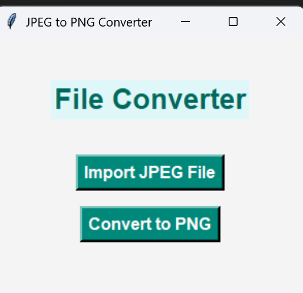

Ibraheem
Qureshi.
Software Engineer. Problem Solver.
About Me
I’m a Computer Science graduate from the University of Denver and an incoming Master’s student in CS at the University of Florida. I’m passionate about building reliable, user-friendly tools and exploring how technology can solve real-world problems. My experience spans full-stack web development, Python data-driven projects, and spatial analysis using GIS.
Core Skills
Experience
UFIT Research Computing
Support & Applications Intern | May 2026 – Present
- Engineered internal tools and Python/Linux automation scripts, scaling Tier 1 operations.
- Adapted scientific research applications on HiPerGator supercomputer.
University of Florida, IFAS
Web Application Developer | Jul 2025 – Present
- Developed SART disaster response platform using Java JSP/Servlet and SQL Server.
- Delivered a 52% page load improvement on high-traffic galleries.
University of Florida, MALT Lab
Machine Learning Researcher | Sep 2025 – Jan 2026
- Executed benchmarking study of YOLO architectures across 250+ experiments.
- Containerized end-to-end ML pipelines with Docker for GPU deployment via Bash.
Marsico Institute
Web Developer | Oct 2023 – Jun 2024
- Rebuilt website content and accessibility with HTML, CSS, JavaScript, PHP, and SQL.
- Contributed to a 40% increase in organic traffic and faster page loads.
Education
University of Florida
M.S. Computer Science (2025 – 2027)
University of Denver
B.S. Computer Science (2020 – 2024)
Selected Projects
Clario: AI-Powered Teaching Platform
Full-Stack Next.js App
Built an educational platform integrating Google Gemini AI to parse curriculum PDFs and auto-generate lesson plans, cutting prep time from hours to minutes. Uses Prisma and Recharts for instructor dashboards.
Adversarial & Privacy Defenses
Machine Learning Research
Implemented defenses against membership inference attacks and adversarial examples (FGSM, PGD) on CIFAR-100 with ResNet-18. Applied differential privacy (DP-SGD) to characterize robustness tradeoff.
PDF Remediator
Streamlit App
An interactive tool to remediate and parse PDF documents for improved accessibility and data extraction workflows.
SART Accessibility Scanner
Streamlit App
A comprehensive accessibility scanning utility designed to evaluate digital compliance for the SART disaster response platform.

JPEG to PNG Converter
Python GUI Tool